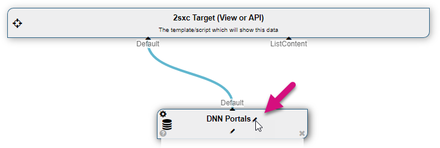
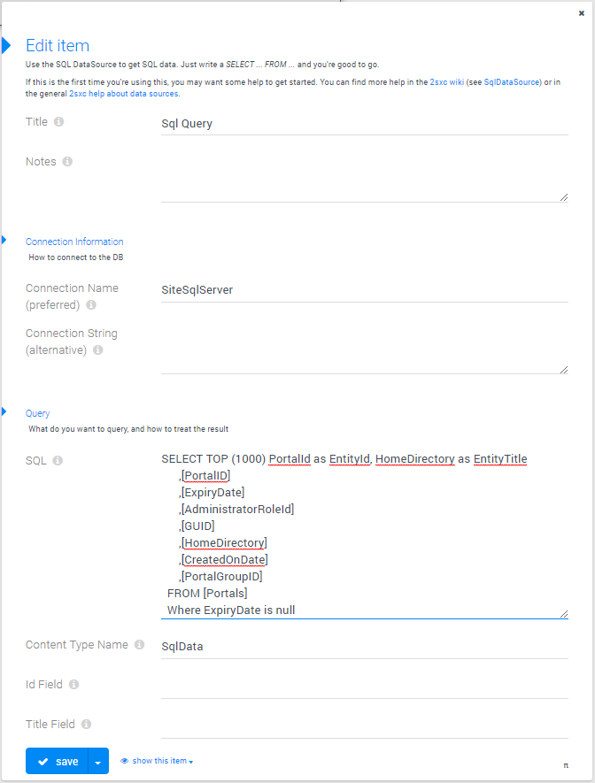
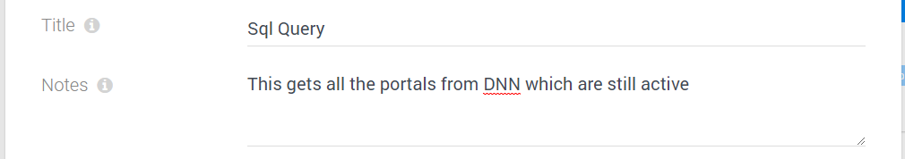
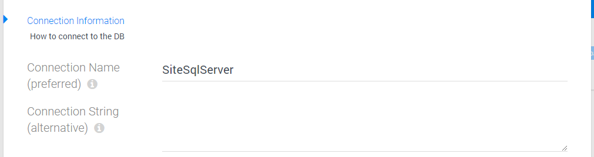
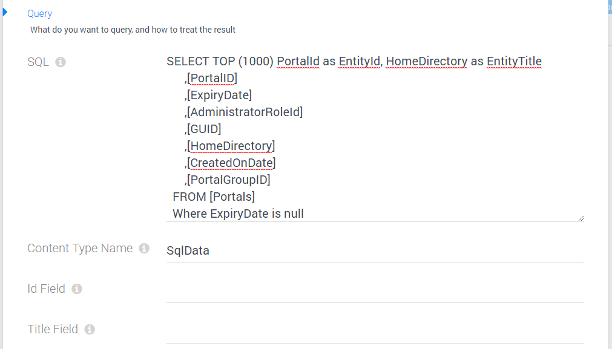

Class Sql
- Namespace
- ToSic.Eav.DataSources
- Assembly
- ToSic.Eav.DataSources.dll
Provide Entities from a SQL Server
The SqlDataSource DataSource is part of the Standard EAV Data Sources. It lets you use data from SQL databases as if they were entities.
How to use with the VisualQuery
When using the VisualQuery you can just drag it into your query. The Default out will contain the items from the DB:
We recommend that you rename it so you know what it's for:
You can then configure your connection to the DB and Query as you need it:
Understanding the Settings
Title & Notes
This is just for your notes, to remind you what this is for and to put notes about anything you wanted to remember.
Connection
There are two ways to connect to SQL databases: using a Connection Name (which points to a detailed connection string in the web.config) or using a detailed Connection String as you need it. We recommend to use connection names where possible. If you provide both, the connection name will be used:
The SQL-Query
The Query section has quite a lot of options, most of which are not required but are important for this to work:
Here's what you need to know
- Content Type
- all entities must have a type-name - so you can just enter something here - in most cases the exact name isn't important, because you usually don't refer back to this, unless further processing will try to filter this or something
- EntityId and EntityTitle
- when using entities in 2sxc / EAV, each entity must be able to supply a title and an ID which is an integer. This is important for internal data processing to work.
- For this to work with SQL, the source needs to know what data-fields to use for this. By default it will use a field called
EntityIdandEntityTitle, but you can also use any other field - in which case you must supply the names in the following fields.
Using URL Parameters in Queries
The SQL DataSource can also use queries which use URL Parameters. It's safe and automatically prevent SQL Injection. For example, you can do the following:
SELECT TOP (1000) PortalId as EntityId, HomeDirectory as EntityTitle,PortalID,ExpiryDate,
AdministratorRoleId,GUID,HomeDirectory,
CreatedOnDate,PortalGroupID
FROM [Portals]
Where PortalId = [QueryString:Id]
This will automatically use the id parameter from the URL to filter the result.
Using Another Entity As SQL Parameter
You can of course use the In stream to provide entities which configure the SQL. The following example has a content-type SqlSetting with only one item (to make the example easier to understand). The App DataSource delivers this in the AppSetting stream, which also goes into the Sql as AppSetting and is then used as a token in the SQL:
Using A Value from a Module-Instance as SQL Parameter
This works like in the App-example: Provide the data from the ModuleDataSource as an In stream to the SqlDataSource, and use that to filter:
Programming With The SqlDataSource DataSource
We recommend to use the VisualQuery where possible, as it's easier to understand and is identical for C# and JavaScript. It's also better because it separates data-retrieval from visualization.
An example code
@{
var sql = CreateSource<ToSic.Eav.DataSources.Sql>();
sql.ConnectionString = "SiteSqlServer"; // use Dnn
sql.SelectCommand = "Select ... From"; // your sql here
}
@foreach(var post in AsList(sql["Default"]))
{
<div>@post.EntityTitle</div>
}
Important When Coding
Note that data sources only retrieve data once, and then ignore any further configuration. So you must set everything before accessing the data.
Read also
Demo App and further links
You should find some examples in this demo App
History
- Introduced in EAV 3.x, in 2sxc ?
API Documentation
[PublicApi]
[VisualQuery(NiceName = "SQL Data", UiHint = "Get data from a database using SQL", Icon = "dynamic_form", Type = DataSourceType.Source, NameId = "ToSic.Eav.DataSources.Sql, ToSic.Eav.DataSources", DynamicOut = false, ConfigurationType = "c76901b5-0345-4866-9fa3-6208de7f8543", NameIds = new string[] { "ToSic.Eav.DataSources.SqlDataSource, ToSic.Eav.DataSources" }, HelpLink = "https://go.2sxc.org/DsSql")]
public class Sql : CustomDataSourceAdvanced, IDataSource, IAppIdentity, IZoneIdentity, IAppIdentityLight, ICacheKey, ICacheExpiring, ITimestamped, IHasLog, IDataSourceLinkable- Inheritance
-
objectServiceBaseSql
- Implements
- Derived
- Inherited Members
Properties
ConnectionString
ConnectionString to the DB
[Configuration]
public string ConnectionString { get; set; }Property Value
ConnectionStringName
Name of the ConnectionString in the Application.Config to use
[Configuration]
public string ConnectionStringName { get; set; }Property Value
ContentType
Name of the ContentType which we'll pretend the items have.
[Configuration(Fallback = "SqlData")]
public string ContentType { get; set; }Property Value
EntityIdField
Name of the Column used as EntityId
[Configuration(Fallback = "entityid")]
public string EntityIdField { get; set; }Property Value
SelectCommand
SQL Command for selecting data.
[Configuration]
public string SelectCommand { get; set; }Property Value
TitleField
Name of the Title Attribute of the Source DataTable
[Configuration(Field = "EntityTitleField", Fallback = "entitytitle")]
public string TitleField { get; set; }